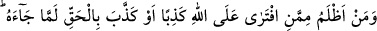
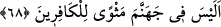

68. Allah’a karşı yalan uyduran yahut kendisine hak gelmişken onu yalan
sayandan daha zâlimi kimdir? Cehennemde kâfirlere yer mi yok!
Bir olup hiç bir şeye ihtiyacı olmadığı ve her şey O’na muhtaç olduğu halde “Allah’a
karşı yalan uyduran” yâni Allah’ın ortağı ve eşi olduğunu iddiâ eden“yahut kendisine
hak gelmişken” Allah’ın Rasûlü Muhammed (s.a.)’i tekzîb ederek, sırf inadından
dolayı hiç düşünmeden “onu” ya da getirdiği Kur’an’ı “yalan sayandan daha zâlimi
kimdir?”
“Kendisine hak gelmişken” ifâdesinde, onları düşüncesizlik ve bilgisizlikten dolayı
aşağılama vardır; çünkü Kur’ân’ı ilk işittiği anda hiç düşünmeden yalanlamak inaddan
kaynaklanır; bu da aşağı kimselerin bir özelliğidir.
“Cehennemde kâfirlere yer mi yok!” Kâfirlerin varacağı durak cehennem değil
midir? Bu, onların ikâmet yerlerinin cehennem olacağının ifâdesidir. Çünkü istifhâm-ı
inkârî hemzesi, nefiy edatına dâhil olunca olumlu bir mânâ ifâde eder. Yâni kâfirler,
Allah Teâlâ’ya iftirâ ettikleri ve açıkça hakkı yalanlayıp tekzîb ettikleri için
cehennemde ikâmet etmeyi ve ebedî kalmayı hak etmişlerdir. Yahut da bu hemze, onların
iftirâ ve yalanlama cüretlerini uzak görme ve inkârdır. Yâni onlar, cehennemde kâfirler
için ebedî bir ikâmet yeri olduğunu bilmediler mi ki, bu suçları işlemeye cesâret
edebiliyorlar?
et-Te’vîlâtü’n-Necmiyye’de der ki: Kendisinde Allah’la beraber bir hal, bir vakit, bir
keşif veya bir müşâhede olduğunu iddiâ etmek sûretiyle “Allah’a iftirâ edenden daha
zâlim kim vardır?” Onlar, açıkça günah bir fiil işledikleri zaman derler ki:
“Babalarımızı bu fiil üzere bulduk” (el-Mâide, 5/104). Bu, şuna işâret eder: Her şeyi
mübâh gören bir fırka (İbâhiyye) ile zamanımız iddiâcılarının çoğu, kendilerinden
sünnet ve şeriata muhâlif bir şey sâdır olunca derler ki: Şeyhlerimizi biz bu fiil üzere
bulduk, Allah bize bunu emretti, Allah’a yakınlığımızdan ve velâyetimizin kuvvetli
oluşundan dolayı bu fiillerimiz bize Allah’tan verilmiştir; bize zarar vermez, bilakis
bize fayda ve menfaat sağlar. “Yahut kendisine hak” yâni şeriat, meşâyihin tarikatı ve
onların sîreti kendisine“gelmişken “yalan sayandan daha zâlimi kimdir? Cehennemde
kâfirlere yer mi yok!” Yani, mânâsız iddiâ ve iftirâlarla, yalan dâvâlarla din, İslâm,
şeriat ve tarikat nimetlerine küfrân-ı nimette bulunanlar için nefis cehenneminde bir
hapis yeri vardır.
Hâfız der ki:
Müddeî, gelip sırları temaşa etmek istedi
Gayb eli geldi, nâ-mahrem olanın sînesine vurdu